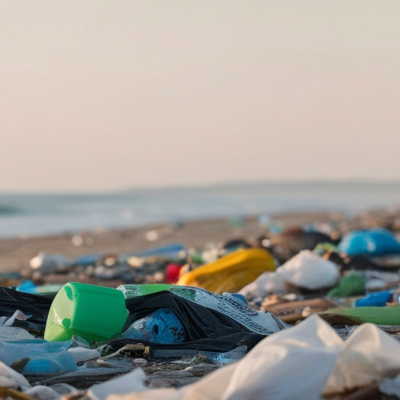

📸 Dokumentasi Krisis Sampah Bali
Realita kondisi sampah dan dampaknya di Bali



Mengatasi darurat sampah dan banjir dengan pendekatan harmonis antara manusia, alam, dan Tuhan
Data terkini yang menunjukkan urgensi penanganan sampah di Bali
Realita kondisi sampah dan dampaknya di Bali

Sampah yang tidak terkelola menyumbat saluran air dan memperparah bencana banjir
Sampah plastik, organik, dan upakara menumpuk di sungai-sungai Bali, menyumbat aliran air dan menyebabkan luapan saat hujan deras. Sedimentasi sampah mengurangi kapasitas tampung sungai hingga 40%.
Ribuan rumah warga di Denpasar, Badung, dan Gianyar terendam banjir akibat sistem drainase yang tersumbat sampah. Air banjir membawa sampah dan limbah yang mengancam kesehatan masyarakat.
Gorong-gorong, saluran drainase, dan sistem pengairan tersumbat sampah. Biaya pembersihan dan perbaikan infrastruktur akibat sampah mencapai miliaran rupiah setiap tahunnya.
Banjir dan sampah yang berserakan merusak citra Bali sebagai destinasi wisata premium. Pantai-pantai tercemar sampah kiriman dari sungai yang meluap saat banjir.
Banjir menyebabkan kerugian ekonomi hingga ratusan miliar rupiah per tahun. Bisnis tutup, hasil panen rusak, dan aktivitas ekonomi lumpuh saat bencana terjadi.
Air banjir yang tercemar sampah dan limbah menyebarkan penyakit seperti diare, leptospirosis, dan infeksi kulit. Anak-anak dan lansia paling rentan terdampak.
Pendekatan komprehensif mewujudkan Tri Hita Karana untuk mengatasi krisis sampah dan mencegah banjir di Bali
Kembali pada kesadaran spiritual bahwa alam adalah pemberian Maha Pencipta yang harus dijaga dengan sungguh-sungguh.
Setiap keluarga Bali adalah garda terdepan dalam pengelolaan sampah dan pencegahan banjir.
Sampah upakara adalah bagian terbesar sampah organik di Bali yang dapat dimanfaatkan.
Bank sampah adalah solusi ekonomi sirkular yang menguntungkan dan mencegah sampah masuk ke sungai.
Ubah sampah plastik, kertas, dan botol menjadi produk bernilai ekonomi tinggi.
Bank sampah mengubah sampah menjadi tabungan dan sumber penghasilan masyarakat.
Generasi muda adalah kunci perubahan untuk masa depan Bali yang bebas sampah.
Pendekatan yang mengintegrasikan kearifan lokal dengan solusi modern
Menjaga alam bukan hanya kewajiban ekologis, tapi juga dharma spiritual sesuai ajaran Tri Hita Karana. Setiap tindakan adalah persembahan kepada Tuhan.
Struktur banjar dan desa adat yang kuat di Bali adalah modal sosial luar biasa. HARMONI mengoptimalkan sistem gotong royong dan perarem untuk efektivitas maksimal.
Bukan hanya konsep, tapi langkah konkret yang bisa dilakukan setiap keluarga. Dari komposting rumahan hingga bank sampah dengan dampak ekonomi nyata.
Dengan mengelola sampah dengan baik, kita mencegah penyumbatan saluran air dan mengurangi risiko banjir yang merugikan masyarakat dan ekonomi Bali.
Bank sampah memberikan penghasilan tambahan, kompos mengurangi biaya pupuk, dan lingkungan bersih meningkatkan nilai properti dan pariwisata.
Bali dikenal dunia sebagai pulau surga. HARMONI memastikan generasi mendatang mewarisi Bali yang indah, bersih, dan berkelanjutan.
Langkah mudah yang bisa Anda lakukan hari ini untuk mengatasi krisis sampah
Mulai dengan menyediakan 3 tempat sampah berbeda di rumah Anda untuk memisahkan sampah sejak awal.
Ubah sampah organik menjadi pupuk berkualitas tinggi untuk tanaman Anda. 70% sampah rumah tangga adalah organik yang bisa dikompos!
Sampah anorganik yang bersih bisa dijual dan memberikan penghasilan tambahan untuk keluarga Anda.
Plastik adalah penyumbang terbesar sampah yang mencemari sungai dan laut Bali.
Kekuatan gotong royong Bali adalah modal terbesar untuk mengatasi krisis sampah secara massal.
Ubah sampah plastik, kertas, dan botol menjadi produk bernilai ekonomi tinggi.
Bank sampah mengubah sampah menjadi tabungan dan sumber penghasilan masyarakat.
Generasi muda adalah kunci perubahan untuk masa depan Bali yang bebas sampah.
Bandingkan dampak jika kita tidak bertindak versus jika kita menerapkan HARMONI
Setiap tindakan kecil Anda hari ini adalah warisan besar untuk anak cucu kita. Bali yang bersih, harmonis, dan berkelanjutan dimulai dari rumah Anda.